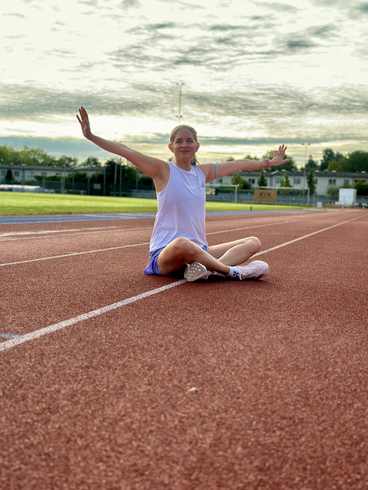
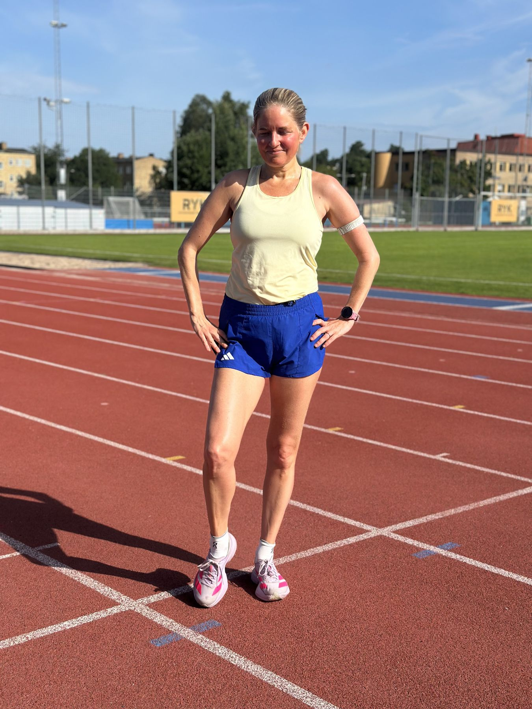
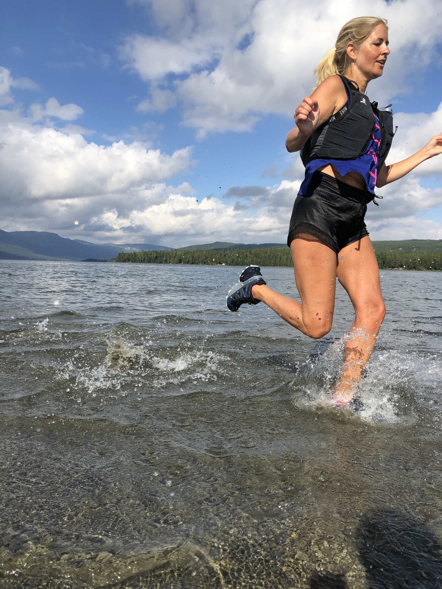

Hitta din RUNCLUB
Vi hjälper dig hitta de senaste och trendigaste run clubs och running events i din stad. Just nu i Stockholm, Göteborg och övriga landet.
Välj din stadFiltrera på nivå, typ och träningsdag när du väljer din stad
@runclubs.se på instagram
Hitta heta run clubs och event i ditt flöde
Vi postar events, nya klubbar och spännande nyheter.
Följ oss på Instagram idag och hitta ditt nästa löparäventyr!
Följ @runclubs.se↳ länk i bio leder alltid tillbaka hit till runclubs.se
Prenumerera på RUNCLUBS veckobrev
Inbjudningar,
events och
promo runs.
Varje söndag får du en sammanställning av vad som händer kommande vecka — veckans pass, nyheter, intervjuer och events. Gratis så klart!
Gratis. Avsluta när du vill.
Kommande events
Dagens händelser
Senaste nytt

Om mig och sajten
Sveriges största sajt för run clubs och running events
Augusti 2026

Find Your Crew · Intervaller
Sex run clubs i Göteborg och Stockholm som kör intervaller
Augusti 2026

My Story
Sex somriga löprundor värda att packa löparskorna för
Juli 2026
Find Your Crew · Tidiga pass
Run Clubs för dig som tycker om att springa tidigt
Juli 2026